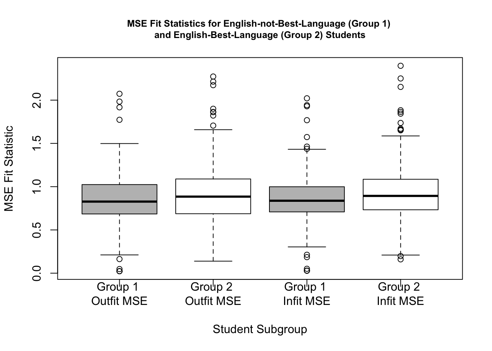

Chapter 7 Example 1: Running the Many-Facet Rasch Model for Wide-Format Data using the TAM Package
In the next section, we provide a step-by-step demonstration of a MFRM analysis using the TAM package for R (-[] Cheng please add reference to Robitzsch et al., 2020). We encourage readers to use the example data set for this chapter that is provided in the online supplement to conduct the analysis along with us.
For this first example, we use a subset of the writing assessment data that only includes students’ scores related to the style of their writing. In the second example in this chapter, we use students’ scores related to all four domains.
7.1 Getting Started
Use the following code to get started with the TAM package, view the citation information, and then install and load it into your R environment.
##
## To cite the 'TAM' package in publications use:
##
## Robitzsch, A., Kiefer, T., & Wu, M. (2020). TAM: Test Analysis
## Modules. R package version 3.5-19.
## https://CRAN.R-project.org/package=TAM
##
## A BibTeX entry for LaTeX users is
##
## @Manual{TAM_3.5-19,
## title = {TAM: Test Analysis Modules},
## author = {Alexander Robitzsch and Thomas Kiefer and Margaret Wu},
## year = {2020},
## note = {R package version 3.5-19},
## url = {https://CRAN.R-project.org/package=TAM},
## }## Loading required package: CDM## Loading required package: mvtnorm## **********************************
## ** CDM 7.5-15 (2020-03-10 14:19:21)
## ** Cognitive Diagnostic Models **
## **********************************## * TAM 3.5-19 (2020-05-05 22:45:39)We will also use the WrightMap package (Torres Irribarra & Freund, 2014):
##
## To cite WrightMap in publications, please use:
##
## Torres Irribarra, D. & Freund, R. (2014). Wright Map: IRT item-person
## map with ConQuest integration. Available at
## http://github.com/david-ti/wrightmap
##
## A BibTeX entry for LaTeX users is
##
## @Manual{,
## author = {David Torres Irribarra and Rebecca Freund},
## title = {Wright Map: IRT item-person map with ConQuest integration},
## year = {2014},
## url = {http://github.com/david-ti/wrightmap},
## }Finally, we will use the psych package (Revelle, 2016):
##
## To cite the psych package in publications use:
##
## Revelle, W. (2020) psych: Procedures for Personality and
## Psychological Research, Northwestern University, Evanston, Illinois,
## USA, https://CRAN.R-project.org/package=psych Version = 2.0.8,.
##
## A BibTeX entry for LaTeX users is
##
## @Manual{,
## title = {psych: Procedures for Psychological, Psychometric, and Personality Research},
## author = {William Revelle},
## organization = { Northwestern University},
## address = { Evanston, Illinois},
## year = {2020},
## note = {R package version 2.0.8},
## url = {https://CRAN.R-project.org/package=psych},
## }7.2 Prepare the data for analysis
Now that we have installed and loaded the packages to our R session, we are ready to import the data. We will use the function read.csv() to import the comma-separated values (.csv) file that contains the data for the first example. We encourage readers to use their preferred method for importing data files into R or R Studio.
Please note that if you use read.csv() to import the data, you will need to specify the file path to the location at which the data file is stored on your computer or set your working directory to the folder in which you have saved the data.
First, we will import the data using read.csv() and store it in an object called style:
The style ratings file is in wide format, because there is one row for each of the 372 unique students. We can see this structure by printing the first six rows of the data frame object:
## student language rater_1 rater_2 rater_3 rater_4 rater_5 rater_6 rater_7
## 1 3 1 2 2 2 2 3 3 1
## 2 7 1 2 3 2 3 1 1 1
## 3 11 1 2 2 2 2 2 3 2
## 4 15 1 0 0 0 1 0 0 1
## 5 20 1 1 1 1 2 2 1 1
## 6 24 2 0 0 0 0 0 0 0
## rater_8 rater_9 rater_10 rater_11 rater_12 rater_13 rater_14 rater_15
## 1 2 2 2 2 2 1 1 2
## 2 2 1 2 3 3 2 1 1
## 3 2 2 2 2 2 2 2 2
## 4 0 0 0 0 1 1 0 0
## 5 1 1 1 1 2 1 0 1
## 6 0 0 0 0 0 0 0 0
## rater_16 rater_17 rater_18 rater_19 rater_20 rater_21
## 1 2 2 1 1 2 1
## 2 2 1 2 2 1 2
## 3 2 2 2 2 2 1
## 4 0 1 0 0 0 0
## 5 1 1 1 1 1 2
## 6 0 1 0 0 0 0Next, we will explore the data using descriptive statistics using the summary() function:
## student language rater_1 rater_2
## Min. : 3.0 Min. :1.000 Min. :0.00 Min. :0.000
## 1st Qu.: 392.0 1st Qu.:1.000 1st Qu.:1.00 1st Qu.:1.000
## Median : 782.0 Median :2.000 Median :2.00 Median :2.000
## Mean : 784.3 Mean :1.532 Mean :1.68 Mean :1.688
## 3rd Qu.:1171.2 3rd Qu.:2.000 3rd Qu.:2.00 3rd Qu.:2.000
## Max. :1574.0 Max. :2.000 Max. :3.00 Max. :3.000
## rater_3 rater_4 rater_5 rater_6
## Min. :0.000 Min. :0.000 Min. :0.000 Min. :0.000
## 1st Qu.:1.000 1st Qu.:1.000 1st Qu.:1.000 1st Qu.:1.000
## Median :2.000 Median :2.000 Median :2.000 Median :2.000
## Mean :1.573 Mean :1.605 Mean :1.798 Mean :1.694
## 3rd Qu.:2.000 3rd Qu.:2.000 3rd Qu.:3.000 3rd Qu.:2.000
## Max. :3.000 Max. :3.000 Max. :3.000 Max. :3.000
## rater_7 rater_8 rater_9 rater_10 rater_11
## Min. :0.000 Min. :0.000 Min. :0.000 Min. :0.00 Min. :0.000
## 1st Qu.:1.000 1st Qu.:1.000 1st Qu.:1.000 1st Qu.:1.00 1st Qu.:1.000
## Median :2.000 Median :2.000 Median :1.000 Median :2.00 Median :2.000
## Mean :1.667 Mean :1.548 Mean :1.347 Mean :1.82 Mean :1.664
## 3rd Qu.:2.000 3rd Qu.:2.000 3rd Qu.:2.000 3rd Qu.:3.00 3rd Qu.:2.000
## Max. :3.000 Max. :3.000 Max. :3.000 Max. :3.00 Max. :3.000
## rater_12 rater_13 rater_14 rater_15 rater_16
## Min. :0.00 Min. :0.000 Min. :0.000 Min. :0.000 Min. :0.000
## 1st Qu.:1.00 1st Qu.:1.000 1st Qu.:1.000 1st Qu.:1.000 1st Qu.:1.000
## Median :2.00 Median :2.000 Median :2.000 Median :2.000 Median :1.000
## Mean :1.68 Mean :1.694 Mean :1.551 Mean :1.809 Mean :1.508
## 3rd Qu.:2.00 3rd Qu.:2.000 3rd Qu.:2.000 3rd Qu.:2.000 3rd Qu.:2.000
## Max. :3.00 Max. :3.000 Max. :3.000 Max. :3.000 Max. :3.000
## rater_17 rater_18 rater_19 rater_20
## Min. :0.000 Min. :0.000 Min. :0.000 Min. :0.000
## 1st Qu.:1.000 1st Qu.:1.000 1st Qu.:1.000 1st Qu.:1.000
## Median :2.000 Median :2.000 Median :1.000 Median :2.000
## Mean :1.505 Mean :1.586 Mean :1.454 Mean :1.508
## 3rd Qu.:2.000 3rd Qu.:2.000 3rd Qu.:2.000 3rd Qu.:2.000
## Max. :3.000 Max. :3.000 Max. :3.000 Max. :3.000
## rater_21
## Min. :0.000
## 1st Qu.:1.000
## Median :2.000
## Mean :1.492
## 3rd Qu.:2.000
## Max. :3.000From the summary of style, we can see there are no missing data. In addition, we can get a general sense of the scales, range, and distribution of each variable in the data set. For example, we can see that the data include student identification numbers, a language subgroup variable, and ratings from 21 raters. We can see that student identification numbers range from 3 to 1574. There are two language subgroups: Subgroup 1 (language = 1) indicates that students’ best language is a language other than English, and subgroup 2 (language = 2) indicates that students’ best language is English. The minimum rating from each rater was x = 0, and the maximum rating was x = 3.
Please note that the TAM package requires that the lowest observation for item responses is equal to zero. In our data, this property is already present. If the lowest category is something other than zero, the analyst will need to recode the responses as we have done in previous chapters.
7.3 Specify the components of the MFRM
Now, we are ready to run the MFRM on the style ratings. Because the MFRM equation is researcher-specified, we need to define the components of the model. To do this, we will create an object called facets in which we specify the facets in the model. By default, the TAM package treats the variables that make up the columns of our item response matrix as an “item” facet. In our example, raters function as pseudo-items. Accordingly, raters make up the first facet in our analysis. Our second facet will be student language subgroups. We specify this facet and save it in a data frame object called facets. We specified “drop = FALSE” because the data frame only includes one column.
Next we need to identify the indicator variable for the object of measurement (i.e., subject). In our example, students are the object of measurement. We will save the student identification numbers in a vector called students:
Finally, we need to specify the response matrix. We do so by extracting the raters’ scores for each student to a data frame object called ratings:
Next, we need to specify the formula for our MFRM. For the first example will use a rating scale model specification of the MFRM. This means that we will constrain the threshold parameters to be equal across raters. The model is specified as follows:
-[]Cheng please add Equation 6.2 here
In Equation 6.2, \(\theta_n\) is defined as in Equation 6.1. \(\gamma_j\) is the logit-scale location for student language subgroup j, \(\lambda_i\) is the logit-scale location for rater i, and \(\tau_k\) is the logit-scale location at which there is an equal probability for a rating in category k and category k-1. The subgroup facet (\(\gamma_j\)) reflects the overall location of students in subgroup j, where higher locations indicate higher levels of writing proficiency, and lower locations indicate lower levels of writing proficiency. The rater facet (\(\lambda_i\)) reflects the severity level of individual rater i, where higher locations mean that the rater is more severe, and requires higher levels of writing proficiency before giving high ratings to student performances. Lower rater locations indicate relatively lenient raters, who more readily give high ratings to student performances.
We specify the MFRM from Equation 6.2 in an object for use with TAM as follows. First, we specify a name for the model object(style_RS_MFRM), which is defined using the tilde symbol (~), followed by the facet names. As a reminder, the model must include a facet named item; in our example, the item facet is made up of raters. We also include the student language subgroup (language) as a facet. Finally, we specify step to indicate the RS model. The components of the model are separated by addition signs (+) because the facets are additive. We will use interactions in a MFRM later in this chapter.
7.4 Run the RS-MFRM
Now we can run our RS-MFRM. We do so using the tam.mml.mfr() function, in which we specify the response matrix (resp=), our specified facets (facets=), the model equation (formulaA=), and the identification numbers for the object of measurement (pid=). After we run the model, we will request a summary of the model results using the summary() function.
RS_MFR_model <- tam.mml.mfr(resp = ratings, facets = facets, formulaA = style_RS_MFRM, pid = students, constraint = "items", verbose = FALSE)
summary(RS_MFR_model)The summary of the MFRM is lengthy. Included among the output are several details that may be important for some researchers, including details about each iteration, global model-fit indicators (e.g., deviance, log-likelihood, AIC, BIC) and an estimate of person separation reliability (EAP Reliability). We will focus our interpretation on the location estimates for the student, subgroup, rater, and threshold parameters.
7.5 Examine facet results
Next, we will save the parameter estimates from the RS-MFRM in a data frame object called facet.estimates. This object includes the location estimates and standard errors for raters, student subgroups, and thresholds. Locations estimates are labeled xsi and standard errors are labeled se.xsi.
For easier reference, we will now create objects in which we store the location estimates and standard errors for raters, subgroups, and thresholds separately. We do this by applying the subset() function to the facet.estimates object:
rater.estimates <- subset(facet.estimates, facet.estimates$facet == "item")
subgroup.estimates <- subset(facet.estimates, facet.estimates$facet == "language")
threshold.estimates <- subset(facet.estimates, facet.estimates$facet == "step")7.5.1 Rater facet results
Next, we will request a summary of the rater facet estimates.
## parameter facet xsi se.xsi
## Length:21 Length:21 Min. :-0.86778 Min. :0.07494
## Class :character Class :character 1st Qu.:-0.31386 1st Qu.:0.07497
## Mode :character Mode :character Median : 0.03373 Median :0.07499
## Mean : 0.00000 Mean :0.08744
## 3rd Qu.: 0.43770 3rd Qu.:0.07509
## Max. : 1.11732 Max. :0.33558From the summary of rater locations, we can see that rater severity estimates range from \(\lambda\) = -0.87 for the most lenient rater to \(\lambda\) = 1.12 for the most severe rater.
7.5.2 Student subgroup facet results
Next, we will examine the language subgroup estimates using the summary() function. Because there are only two subgroups in our analysis.
## Min. 1st Qu. Median Mean 3rd Qu. Max.
## -0.06565 -0.03283 0.00000 0.00000 0.03283 0.06565We can also print the locations to our console to inspect them.
## [1] -0.06565052 0.06565052From these results, we can see that the two student subgroup locations are quite close. As a group, students whose best language is not English (subgroup 1) had a slightly lower location on the logit scale (\(\gamma_1\) = -0.07 logits) compared to students whose best language was not English (subgroup 2; \(\gamma_2\) = 0.07 logits). Although there was a difference in subgroup locations, the difference was very small (about 0.13 logits), and therefore likely does not reflect a substantively meaningful difference in writing achievement between these two groups.
7.5.3 Threshold estimates
Next we will examine the threshold estimates. Because we used a RS formulation of the MFRM, there is one set of threshold estimates for our model that applies across raters. We will print the threshold estimates to the console to view them.
## [1] -4.0087904 0.2353612 3.77342937.5.4 Student estimates
Next, we will examine the student location estimates from the RS-MFRM. We qill apply the tam.wle() function to our model object (RS_MFR_model) and store the results in an object called student.ach. Then, we will store the student identification numbers, location estimates, and standard errors in a new object called student.locations_RSMFR. Finally, we will summarize the results using the summary() function.
student.ach <- tam.wle(RS_MFR_model)
student.locations_RSMFR <- cbind.data.frame(student.ach$pid, student.ach$theta, student.ach$error)
names(student.locations_RSMFR) <- c("id", "theta", "se")
summary(student.locations_RSMFR)From the summary of the student achievement locations, we can see that student achievement ranges from \(\theta\) = -7.96 logits for the student with the lowest achievement estimate to \(\theta\) = 7.60 for the student with the highest achievement estimate. On average, the students were located slightly higher (M(\(\theta\)) = 0.47) than the average rater location (M(\(\lambda\)) = 0.00).
7.5.5 Plot a Wright Map
Next, we will plot a Wright Map to display the locations of the parameter estimates for our RS-MFR model. To do this, we need to manipulate the location estimate objects into the format required for the WrightMap package.
First, we need to store the rater location estimates as a matrix that shows rater-specific threshold locations. We accomplish this task using a for-loop in which we add each rater’s location to the three threshold values and store the results in a matrix called rater_thresholds. We use the head() function to preview the first six rows of the results.
rater_thresholds <- matrix(data = NA, nrow = nrow(rater.estimates), ncol = nrow(threshold.estimates))
for(rater in 1:nrow(rater.estimates)){
for(tau in 1:nrow(threshold.estimates)){
rater_thresholds[rater,tau] <- (rater.estimates$xsi[rater] + threshold.estimates$xsi[tau])
}
}
head(rater_thresholds)## [,1] [,2] [,3]
## [1,] -4.288967 -0.04481525 3.493253
## [2,] -4.322646 -0.07849438 3.459574
## [3,] -3.840553 0.40359889 3.941667
## [4,] -3.975059 0.26909229 3.807160
## [5,] -4.785429 -0.54127709 2.996791
## [6,] -4.345107 -0.10095584 3.437112Finally, we can plot the Wright map using the wrightMap() function. We specify several graphical parameters to modify the appearance of the plot.
wrightMap(thetas = cbind(student.locations_RSMFR$theta, subgroup.estimates$xsi),
axis.persons = "Students",
dim.names = c("Students", "Subgroups"),
thresholds = rater_thresholds,
show.thr.lab = TRUE,
label.items.rows= 2,
label.items = rater.estimates$parameter,
axis.items = "Raters",
main.title = "Rating Scale Many-Facet Rasch Model Wright Map:\n Style Ratings",
cex.main = .6)
## [,1] [,2] [,3]
## [1,] -4.288967 -0.04481525 3.493253
## [2,] -4.322646 -0.07849438 3.459574
## [3,] -3.840553 0.40359889 3.941667
## [4,] -3.975059 0.26909229 3.807160
## [5,] -4.785429 -0.54127709 2.996791
## [6,] -4.345107 -0.10095584 3.437112
## [7,] -4.232865 0.01128652 3.549355
## [8,] -3.739598 0.50455410 4.042622
## [9,] -2.891467 1.35268451 4.890753
## [10,] -4.876566 -0.63241444 2.905654
## [11,] -4.221649 0.02250299 3.560571
## [12,] -4.288967 -0.04481525 3.493253
## [13,] -4.345107 -0.10095584 3.437112
## [14,] -3.750819 0.49333235 4.031400
## [15,] -4.830952 -0.58680019 2.951268
## [16,] -3.571092 0.67305934 4.211127
## [17,] -3.559845 0.68430692 4.222375
## [18,] -3.896607 0.34754470 3.885613
## [19,] -3.345721 0.89843079 4.436499
## [20,] -3.571092 0.67305934 4.211127
## [21,] -3.504491 0.73966026 4.277728In this Wright Map display, the results from the RS-MFRM analysis of the style ratings are summarized graphically. The figure is organized as follows:
Units on the logit scale are shown on the far-right axis of the plot (labeled Logits).
The left-most panel shows a histogram of student locations on the logit scale that represents the latent variable.
The second panel from the left shows the distribution of subgroups on the logit scale. There are only two subgroups in our analysis.
The large central panel shows the rating scale category threshold estimates specific to each rater on the logit scale that represents the latent variable. Light gray diamond shapes show the logit scale location of the threshold estimates for each rater, as labeled on the x-axis. Thresholds are labeled using integers that show the threshold number. In our example, \(\tau_1\) is the threshold between rating scale categories x = 0 and x = 1, \(\tau_2\) is the threshold between rating scale categories x = 1 and x = 2, and \(\tau_3\) is the threshold between rating scale categories x = 2 and x = 3. Because we used a RS model formulation, the distance between adjacent thresholds is the same for all of the raters in the analysis.
Even though it is not appropriate to fully interpret item and person locations on the logit scale until there is evidence of acceptable model-data fit, we recommend examining the Wright Map during the preliminary stages of a MFRM analysis to get a general sense of the model results and to identify any potential scoring or data entry errors.
The Wright Map suggests that, on average, the students are located higher on the logit scale compared to the average rater threshold locations. In addition, there appears to be a relatively wide spread of student and rater locations on the logit scale, such that the style writing assessment appears to be a useful tool for identifying differences in students’ writing achievement related to style as well as differences in rater severity. The subgroup locations are close together, suggesting that there is not a substantial difference in the logit-scale locations between students in either language subgroup.
7.6 Evaluate model-data fit
Because the MFR model analyses result in notably different output structures from the other models in this book, we demonstrate a procedure for evaluating model-data fit specific to the MFRM with the TAM package. These procedures generally follow the methods that we presented in Chapter 3. We encourage readers to refer to Chapter 3 for more details about model-data fit analysis procedures in the context of Rasch measurement theory.
7.6.1 Evaluate unidimensionality
First, we will evaluate the MFRM requirement for unidimensionality using the same procedure that we demonstrated in Chapter 3. We will evaluate this requirement by examining the residuals for evidence of potential secondary latent variables in the rating data.
First, we will extract the model residuals using the IRT.residuals() function. We will save the results in an object called resids.
With the MFRM in TAM, residuals are presented separately for each level of the explanatory facets.We need to do some manipulation to construct a typical residual matrix.
# Extract the raw residuals from the residuals object:
r <- as.data.frame(resids$residuals)
# Save the residuals in a matrix:
resid.matrix <- matrix(data = NA, nrow = nrow(style), ncol = ncol(ratings))
ngroups <- nrow(subgroup.estimates)
for(rater.number in 1:ncol(ratings)){
group.raters <- NULL
for(group in 1:ngroups){
group.raters[group] <- paste("rater_", rater.number, "-", "language", group, sep = "")
}
rater <- subset(r, select = group.raters)
resid.matrix[, rater.number] <- rowSums(rater, na.rm = TRUE)
}The resulting residual matrix (resid.matrix) contains unstandardized residuals for each rater in combination with each student. We can request a summary of the residuals using the summary() function.
## V1 V2 V3
## Min. :-0.8720935 Min. :-1.420942 Min. :-1.4791528
## 1st Qu.:-0.2549514 1st Qu.:-0.274500 1st Qu.:-0.2851743
## Median :-0.0077079 Median : 0.013201 Median :-0.0510018
## Mean : 0.0005283 Mean : 0.000579 Mean :-0.0001553
## 3rd Qu.: 0.2620021 3rd Qu.: 0.292048 3rd Qu.: 0.2780877
## Max. : 0.8322521 Max. : 1.105139 Max. : 1.3321125
## V4 V5 V6
## Min. :-1.2272670 Min. :-1.652861 Min. :-1.6573164
## 1st Qu.:-0.2748957 1st Qu.:-0.331729 1st Qu.:-0.2807316
## Median :-0.0406712 Median : 0.030395 Median : 0.0109159
## Mean : 0.0000541 Mean : 0.001305 Mean : 0.0006129
## 3rd Qu.: 0.2935610 3rd Qu.: 0.376537 3rd Qu.: 0.3426836
## Max. : 1.1977862 Max. : 1.161846 Max. : 1.3303213
## V7 V8 V9
## Min. :-1.840913 Min. :-1.2572283 Min. :-1.490981
## 1st Qu.:-0.334836 1st Qu.:-0.2642853 1st Qu.:-0.260792
## Median : 0.003208 Median :-0.0404119 Median :-0.002868
## Mean : 0.000444 Mean :-0.0003173 Mean :-0.001916
## 3rd Qu.: 0.369238 3rd Qu.: 0.3012590 3rd Qu.: 0.291424
## Max. : 1.128706 Max. : 1.2138505 Max. : 1.196095
## V10 V11 V12
## Min. :-1.697066 Min. :-1.7755764 Min. :-1.1677479
## 1st Qu.:-0.364383 1st Qu.:-0.2788290 1st Qu.:-0.2651811
## Median : 0.048396 Median : 0.0053900 Median :-0.0077079
## Mean : 0.001459 Mean : 0.0004272 Mean : 0.0005283
## 3rd Qu.: 0.320832 3rd Qu.: 0.2926569 3rd Qu.: 0.3079066
## Max. : 1.588861 Max. : 1.1316668 Max. : 1.2168493
## V13 V14 V15
## Min. :-1.2807316 Min. :-1.307749 Min. :-1.514836
## 1st Qu.:-0.2807316 1st Qu.:-0.264029 1st Qu.:-0.353633
## Median :-0.0186486 Median :-0.028037 Median : 0.027754
## Mean : 0.0006129 Mean :-0.000299 Mean : 0.001382
## 3rd Qu.: 0.2831941 3rd Qu.: 0.341223 3rd Qu.: 0.333972
## Max. : 2.1162172 Max. : 1.259790 Max. : 1.659885
## V16 V17 V18
## Min. :-1.2112134 Min. :-1.5035128 Min. :-1.2532313
## 1st Qu.:-0.2631960 1st Qu.:-0.2427753 1st Qu.:-0.3478625
## Median :-0.0283622 Median :-0.0254873 Median :-0.0252858
## Mean :-0.0005991 Mean :-0.0006185 Mean :-0.0000673
## 3rd Qu.: 0.2917395 3rd Qu.: 0.2945282 3rd Qu.: 0.3573416
## Max. : 1.5083373 Max. : 0.9947242 Max. : 1.7823361
## V19 V20 V21
## Min. :-1.970761 Min. :-1.3069441 Min. :-1.3782928
## 1st Qu.:-0.290893 1st Qu.:-0.2578178 1st Qu.:-0.3490855
## Median :-0.016362 Median :-0.0403876 Median :-0.0250052
## Mean :-0.001003 Mean :-0.0005991 Mean :-0.0005034
## 3rd Qu.: 0.319156 3rd Qu.: 0.2760575 3rd Qu.: 0.3616100
## Max. : 1.375968 Max. : 1.6930559 Max. : 1.1502392Next, we will calculate standardized residuals and save them in a matrix.
# Extract standardized residuals from the resids object:
s <- as.data.frame(resids$stand_residuals)
# Save the standardized residuals in a matrix:
std.resid.matrix <- matrix(data = NA, nrow = nrow(style), ncol = ncol(ratings))
ngroups <- nrow(subgroup.estimates)
for(rater.number in 1:ncol(ratings)){
group.raters <- NULL
for(group in 1:ngroups){
group.raters[group] <- paste("rater_", rater.number, "-", "language", group, sep = "")
}
rater <- subset(s, select = group.raters)
std.resid.matrix[, rater.number] <- rowSums(rater, na.rm = TRUE)
}The resulting standardized residual matrix (std.resid.matrix) contains standardized residuals for each rater in combination with each student. We can request a summary of the standardized residuals using the summary() function.
## V1 V2 V3
## Min. :-1.905573 Min. :-2.6739747 Min. :-2.804596
## 1st Qu.:-0.506610 1st Qu.:-0.5272524 1st Qu.:-0.547342
## Median :-0.017469 Median : 0.0261100 Median :-0.116144
## Mean : 0.001797 Mean : 0.0008406 Mean :-0.005178
## 3rd Qu.: 0.539548 3rd Qu.: 0.5925535 3rd Qu.: 0.599999
## Max. : 1.614322 Max. : 2.2327370 Max. : 2.480064
## V4 V5 V6
## Min. :-2.352105 Min. :-3.550895 Min. :-4.633229
## 1st Qu.:-0.545791 1st Qu.:-0.643667 1st Qu.:-0.574122
## Median :-0.091681 Median : 0.154439 Median : 0.038408
## Mean :-0.002665 Mean :-0.000695 Mean :-0.002009
## 3rd Qu.: 0.561183 3rd Qu.: 0.733903 3rd Qu.: 0.699916
## Max. : 2.294880 Max. : 2.445825 Max. : 2.558088
## V7 V8 V9 V10
## Min. :-5.001274 Min. :-2.39532 Min. :-2.76313 Min. :-3.631195
## 1st Qu.:-0.653444 1st Qu.:-0.55387 1st Qu.:-0.53410 1st Qu.:-0.714268
## Median : 0.007274 Median :-0.09110 Median :-0.03189 Median : 0.107318
## Mean : 0.002090 Mean :-0.00434 Mean :-0.01790 Mean : 0.007198
## 3rd Qu.: 0.723793 3rd Qu.: 0.63084 3rd Qu.: 0.55890 3rd Qu.: 0.648185
## Max. : 2.620964 Max. : 2.34223 Max. : 2.50555 Max. : 2.991547
## V11 V12 V13
## Min. :-3.379947 Min. :-2.4268995 Min. :-2.43752
## 1st Qu.:-0.559090 1st Qu.:-0.5582728 1st Qu.:-0.57412
## Median : 0.012221 Median :-0.0174691 Median :-0.04222
## Mean : 0.000476 Mean :-0.0009504 Mean : 0.01464
## 3rd Qu.: 0.600732 3rd Qu.: 0.6148209 3rd Qu.: 0.58354
## Max. : 2.279595 Max. : 2.5338268 Max. : 4.65120
## V14 V15 V16 V17
## Min. :-2.479396 Min. :-3.633462 Min. :-2.32842 Min. :-2.866796
## 1st Qu.:-0.528480 1st Qu.:-0.690256 1st Qu.:-0.52705 1st Qu.:-0.485524
## Median :-0.096028 Median : 0.128790 Median :-0.08553 Median :-0.080399
## Mean :-0.001522 Mean :-0.009907 Mean : 0.01251 Mean : 0.006629
## 3rd Qu.: 0.664274 3rd Qu.: 0.631947 3rd Qu.: 0.58623 3rd Qu.: 0.586322
## Max. : 3.341481 Max. : 3.202743 Max. : 2.99215 Max. : 4.898917
## V18 V19 V20 V21
## Min. :-2.47201 Min. :-3.894515 Min. :-3.13548 Min. :-2.621430
## 1st Qu.:-0.65651 1st Qu.:-0.584599 1st Qu.:-0.52705 1st Qu.:-0.719490
## Median :-0.05719 Median :-0.032374 Median :-0.11531 Median :-0.085298
## Mean : 0.01107 Mean :-0.003207 Mean :-0.02057 Mean :-0.002907
## 3rd Qu.: 0.70804 3rd Qu.: 0.621979 3rd Qu.: 0.58064 3rd Qu.: 0.710115
## Max. : 4.29765 Max. : 4.095569 Max. : 3.31528 Max. : 2.640340Next, we will calculate the variance in observations due to Rasch-model-estimated locations.
# Variance of the observations: VO
observations.vector <- as.vector(as.matrix(ratings))
VO <- var(observations.vector)
# Variance of the residuals: VR
residuals.vector <- as.vector(resid.matrix)
VR <- var(residuals.vector)
# Raw variance explained by Rasch measures: (VO - VR)/VO
(VO - VR)/VO## [1] 0.7418448## [1] 74.18448Our analysis indicates that approximately 74.18% of the variance in ratings can be explained by the MFRM estimates of student, subgroup, and rater locations on the logit scale that represents the latent variable.
7.6.2 Principal Components Analysis of Standardized Residual Correlations
Next, we will evaluate the MFRM requirement for unidimensionality using a principal components analysis (PCA) of standardized residual correlations.
pca <- pca(std.resid.matrix, nfactors = ncol(ratings), rotate = "none")
contrasts <- c(pca$values[1], pca$values[2], pca$values[3], pca$values[4], pca$values[5])
plot(contrasts, ylab = "Eigenvalues for Contrasts", xlab = "Contrast Number", main = "Contrasts from PCA of Standardized Residual Correlations", ylim = c(0, 2))
In this example, all of the contrasts have eigenvalues that are smaller than Linacre’s (2016) critical value of 2.00. This result suggests that the correlations among the model residuals primarily reflect randomness (i.e., noise)–thus providing evidence that the responses adequately adhere to the Rasch model requirement of unidimensionality.
7.6.3 Summaries of Residuals: Infit & Outfit Statistics
Next, we will evaluate model-data fit for individual elements of our facets (students, subgroups, and raters) using numeric summaries of the residuals associated with each element, as we have done in previous chapters.
Student fit
First, we will examine student fit using numeric infit and outfit statistics. We can request these statistics for each student using the tam.personfit() function. We will store the student fit results in an object called student.fit, and then request a summary of the results.
## outfitPerson outfitPerson_t infitPerson infitPerson_t
## Min. :0.02316 Min. :-4.4319 Min. :0.02864 Min. :-4.4127
## 1st Qu.:0.68598 1st Qu.:-0.9746 1st Qu.:0.71532 1st Qu.:-0.9820
## Median :0.86656 Median :-0.3589 Median :0.87396 Median :-0.3395
## Mean :0.89235 Mean :-0.3164 Mean :0.90161 Mean :-0.3018
## 3rd Qu.:1.05763 3rd Qu.: 0.2927 3rd Qu.:1.03084 3rd Qu.: 0.2107
## Max. :2.27289 Max. : 3.5579 Max. :2.39702 Max. : 3.6512On average, the MSE outfit and infit statistics are slightly lower than the expected value of 1 (Mean Outfit = 0.89, Mean Infit = 0.90). The average values of the standardized fit statistics are also slightly lower than their expected value of 0 (Mean Std. Outfit = -0.33, Mean Std. Infit = -0.31). For both the standardized and unstandardized fit statistics, there is notable variability across the student sample. This result suggests that model-data fit varies for individual students.
Subgroup and rater fit
We can also examine model-data fit related to the subgroup and rater facets. In the TAM package, fit analysis for facets besides the object of measurement uses combinations of elements within facets. In our example, fit statistics are calculated for rater*subgroup combinations.
## ------------------------------------------------------------
## TAM 3.5-19 (2020-05-05 22:45:39)
## R version 3.6.3 (2020-02-29) x86_64, darwin15.6.0 | nodename=Chengs-iMac | login=root
##
## Date of Analysis: 2021-05-22 22:58:23
## Time difference of 0.06354785 secs
## Computation time: 0.06354785
##
## MSQ item fit statitics (Function 'msq.itemfit')
##
## Call:
## msq.itemfit(object = RS_MFR_model)
##
## ****************************************************
##
## Summary outfit and infit statistic
## fit M SD
## 1 Outfit 0.948 0.187
## 2 Infit 0.956 0.175
##
## ****************************************************
##
## Outfit and infit statistic
## item fitgroup Outfit Outfit_t Outfit_p Infit Infit_t Infit_p
## 1 rater_1-language1 1 0.538 -4.842 0.000 0.569 -4.906 0.000
## 2 rater_1-language2 2 0.515 -5.661 0.000 0.550 -5.551 0.000
## 3 rater_10-language1 3 0.994 -0.004 0.997 1.010 0.136 0.892
## 4 rater_10-language2 4 1.163 1.417 0.156 1.189 1.870 0.062
## 5 rater_11-language1 5 0.707 -2.821 0.005 0.745 -2.643 0.008
## 6 rater_11-language2 6 0.968 -0.271 0.786 1.000 0.029 0.977
## 7 rater_12-language1 7 0.809 -1.747 0.081 0.835 -1.647 0.100
## 8 rater_12-language2 8 0.859 -1.387 0.165 0.860 -1.478 0.139
## 9 rater_13-language1 9 0.633 -3.645 0.000 0.660 -3.696 0.000
## 10 rater_13-language2 10 0.989 -0.067 0.946 0.997 -0.004 0.997
## 11 rater_14-language1 11 0.945 -0.447 0.655 0.960 -0.341 0.733
## 12 rater_14-language2 12 1.062 0.614 0.539 1.058 0.610 0.542
## 13 rater_15-language1 13 1.095 0.794 0.427 1.070 0.701 0.483
## 14 rater_15-language2 14 1.161 1.413 0.158 1.073 0.772 0.440
## 15 rater_16-language1 15 0.749 -2.340 0.019 0.779 -2.191 0.028
## 16 rater_16-language2 16 0.999 0.031 0.975 0.983 -0.136 0.892
## 17 rater_17-language1 17 0.683 -3.041 0.002 0.689 -3.218 0.001
## 18 rater_17-language2 18 0.889 -1.035 0.300 0.874 -1.302 0.193
## 19 rater_18-language1 19 1.092 0.821 0.412 1.100 0.949 0.343
## 20 rater_18-language2 20 1.240 2.167 0.030 1.203 1.977 0.048
## 21 rater_19-language1 21 0.996 0.007 0.995 1.009 0.123 0.902
## 22 rater_19-language2 22 1.096 0.880 0.379 1.133 1.318 0.188
## 23 rater_2-language1 23 0.769 -2.143 0.032 0.784 -2.212 0.027
## 24 rater_2-language2 24 0.840 -1.586 0.113 0.833 -1.794 0.073
## 25 rater_20-language1 25 0.871 -1.125 0.261 0.883 -1.100 0.271
## 26 rater_20-language2 26 0.963 -0.312 0.755 0.953 -0.456 0.648
## 27 rater_21-language1 27 1.195 1.615 0.106 1.188 1.680 0.093
## 28 rater_21-language2 28 1.240 2.101 0.036 1.268 2.535 0.011
## 29 rater_3-language1 29 0.840 -1.443 0.149 0.851 -1.443 0.149
## 30 rater_3-language2 30 1.002 0.051 0.959 0.982 -0.148 0.882
## 31 rater_4-language1 31 0.772 -2.143 0.032 0.781 -2.205 0.027
## 32 rater_4-language2 32 0.840 -1.592 0.111 0.836 -1.749 0.080
## 33 rater_5-language1 33 1.140 1.140 0.254 1.155 1.476 0.140
## 34 rater_5-language2 34 1.187 1.635 0.102 1.165 1.653 0.098
## 35 rater_6-language1 35 1.047 0.437 0.662 1.047 0.480 0.631
## 36 rater_6-language2 36 1.021 0.238 0.812 1.049 0.534 0.593
## 37 rater_7-language1 37 1.236 1.955 0.051 1.148 1.389 0.165
## 38 rater_7-language2 38 1.090 0.871 0.384 1.116 1.182 0.237
## 39 rater_8-language1 39 1.008 0.111 0.911 1.039 0.392 0.695
## 40 rater_8-language2 40 0.819 -1.793 0.073 0.852 -1.559 0.119
## 41 rater_9-language1 41 0.970 -0.197 0.844 1.031 0.322 0.748
## 42 rater_9-language2 42 0.790 -1.861 0.063 0.853 -1.503 0.133As needed, researchers can also examine model-data fit statistics specific to subgroups of examinees. This can be accomplished by calculating summary statistics of person fit statistics within examinee subgroups. The code below merges the person fit results with student subgroup identification numbers, and then calculates summary statistics and produces boxplots of the fit statistics by group.
fit_with_subgroups <- cbind.data.frame(style$language, student.fit)
fit_group_1 <- subset(fit_with_subgroups, fit_with_subgroups$`style$language` == 1)
summary(fit_group_1)## style$language outfitPerson outfitPerson_t infitPerson
## Min. :1 Min. :0.02316 Min. :-4.4319 Min. :0.02864
## 1st Qu.:1 1st Qu.:0.68466 1st Qu.:-0.9417 1st Qu.:0.70912
## Median :1 Median :0.82740 Median :-0.4486 Median :0.83743
## Mean :1 Mean :0.85283 Mean :-0.4074 Mean :0.85791
## 3rd Qu.:1 3rd Qu.:1.02342 3rd Qu.: 0.1810 3rd Qu.:0.99770
## Max. :1 Max. :2.07326 Max. : 3.3508 Max. :2.02118
## infitPerson_t
## Min. :-4.41268
## 1st Qu.:-0.97776
## Median :-0.44306
## Mean :-0.40875
## 3rd Qu.: 0.08486
## Max. : 3.28558fit_group_2 <- subset(fit_with_subgroups, fit_with_subgroups$`style$language` == 2)
summary(fit_group_2)## style$language outfitPerson outfitPerson_t infitPerson
## Min. :2 Min. :0.1389 Min. :-3.5106 Min. :0.1599
## 1st Qu.:2 1st Qu.:0.6915 1st Qu.:-0.9962 1st Qu.:0.7330
## Median :2 Median :0.8848 Median :-0.3268 Median :0.8932
## Mean :2 Mean :0.9271 Mean :-0.2364 Mean :0.9400
## 3rd Qu.:2 3rd Qu.:1.0873 3rd Qu.: 0.4161 3rd Qu.:1.0843
## Max. :2 Max. :2.2729 Max. : 3.5579 Max. :2.3970
## infitPerson_t
## Min. :-3.4857
## 1st Qu.:-0.9809
## Median :-0.2919
## Mean :-0.2078
## 3rd Qu.: 0.4148
## Max. : 3.6512# Boxplots for MSE fit statistics:
boxplot(fit_group_1$outfitPerson, fit_group_2$outfitPerson,
fit_group_1$infitPerson, fit_group_2$infitPerson,
names = c("Group 1 \nOutfit MSE", "Group 2 \nOutfit MSE",
"Group 1 \nInfit MSE", "Group 2 \nInfit MSE"),
col = c("grey", "white", "grey", "white"),
main = "MSE Fit Statistics for English-not-Best-Language (Group 1) \nand English-Best-Language (Group 2) Students",
cex.main = .8,
ylab = "MSE Fit Statistic", xlab = "Student Subgroup")
# Boxplots for standardized fit statistics:
boxplot(fit_group_1$outfitPerson_t, fit_group_2$outfitPerson_t,
fit_group_1$infitPerson_t, fit_group_2$infitPerson_t,
names = c("Group 1 \nStd. Outfit", "Group 2 \nStd. Outfit",
"Group 1 \nStd. Infit", "Group 2 \nStd. Infit"),
col = c("grey", "white", "grey", "white"),
main = "Standardized Fit Statistics for English-not-Best-Language (Group 1) \nand English-Best-Language (Group 2) Students",
cex.main = .8,
ylab = "MSE Fit Statistic", xlab = "Student Subgroup")
Finally, it may be useful to examine fit statistics as they apply to individual raters. This can be accomplished by extracting rater-specific fit statistics within each subgroup. The code below calculates rater fit statistics within each subgroup.
ngroups <- nrow(subgroup.estimates)
rater.fit <- matrix(data = NA, nrow = ncol(ratings), ncol = (ngroups * 4) + 1 )
for(rater.number in 1:ncol(ratings)){
# calculate rater-specific fit statistics:
rater.outfit <- rater.subgroup.fit$itemfit$Outfit[((rater.number*ngroups) - (ngroups - 1)) : (rater.number*ngroups)]
rater.infit <- rater.subgroup.fit$itemfit$Infit[((rater.number*ngroups) - (ngroups - 1)) : (rater.number*ngroups)]
rater.std.outfit <- rater.subgroup.fit$itemfit$Outfit_t[((rater.number*ngroups) - (ngroups - 1)) : (rater.number*ngroups)]
rater.std.infit <- rater.subgroup.fit$itemfit$Infit_t[((rater.number*ngroups) - (ngroups - 1)) : (rater.number*ngroups)]
# add the fit statistics to the matrix:
rater.fit[rater.number, ] <- c(rater.number, rater.outfit, rater.infit,
rater.std.outfit, rater.std.infit)
}
# Convert the rater fit results to a dataframe object and add meaningful column names:
rater.fit_results <- as.data.frame(rater.fit)
infit_mse_labels <- NULL
for(group in 1:ngroups){
infit_mse_labels[group] <- paste("Infit_MSE_Group", group, sep = "")
}
outfit_mse_labels <- NULL
for(group in 1:ngroups){
outfit_mse_labels[group] <- paste("Outfit_MSE_Group", group, sep = "")
}
std_infit_mse_labels <- NULL
for(group in 1:ngroups){
std_infit_mse_labels[group] <- paste("Std.Infit_MSE_Group", group, sep = "")
}
std_outfit_mse_labels <- NULL
for(group in 1:ngroups){
std_outfit_mse_labels[group] <- paste("Std.Outfit_MSE_Group", group, sep = "")
}
names(rater.fit_results) <- c("Rater", outfit_mse_labels, infit_mse_labels,
std_outfit_mse_labels, std_infit_mse_labels)
# Display the rater fit results for the first six raters using the head() function:
head(rater.fit_results)## Rater Outfit_MSE_Group1 Outfit_MSE_Group2 Infit_MSE_Group1 Infit_MSE_Group2
## 1 1 0.5378319 0.5152339 0.5685180 0.5500132
## 2 2 0.9943884 1.1627861 1.0104348 1.1889506
## 3 3 0.7072920 0.9684632 0.7454948 0.9996399
## 4 4 0.8087563 0.8586822 0.8348633 0.8604496
## 5 5 0.6328367 0.9893404 0.6602235 0.9965140
## 6 6 0.9454056 1.0622633 0.9602931 1.0577594
## Std.Outfit_MSE_Group1 Std.Outfit_MSE_Group2 Std.Infit_MSE_Group1
## 1 -4.84231202 -5.66063470 -4.9062354
## 2 -0.00409796 1.41721943 0.1355469
## 3 -2.82054661 -0.27109066 -2.6428614
## 4 -1.74675007 -1.38725250 -1.6466281
## 5 -3.64467726 -0.06720607 -3.6957750
## 6 -0.44670525 0.61361924 -0.3414119
## Std.Infit_MSE_Group2
## 1 -5.551375656
## 2 1.869833670
## 3 0.028685263
## 4 -1.477855312
## 5 -0.003650316
## 6 0.610061859Now that we have created a data frame with the rater-specific fit statistics, we can summarize the results.
## Rater Outfit_MSE_Group1 Outfit_MSE_Group2 Infit_MSE_Group1
## Min. : 1 Min. :0.5378 Min. :0.5152 Min. :0.5685
## 1st Qu.: 6 1st Qu.:0.7694 1st Qu.:0.8587 1st Qu.:0.7814
## Median :11 Median :0.9454 Median :0.9995 Median :0.9603
## Mean :11 Mean :0.9091 Mean :0.9873 Mean :0.9207
## 3rd Qu.:16 3rd Qu.:1.0466 3rd Qu.:1.0958 3rd Qu.:1.0470
## Max. :21 Max. :1.2359 Max. :1.2400 Max. :1.1878
## Infit_MSE_Group2 Std.Outfit_MSE_Group1 Std.Outfit_MSE_Group2
## Min. :0.5500 Min. :-4.8423 Min. :-5.66064
## 1st Qu.:0.8604 1st Qu.:-2.1434 1st Qu.:-1.38725
## Median :0.9965 Median :-0.4467 Median : 0.03104
## Mean :0.9918 Mean :-0.9075 Mean :-0.19763
## 3rd Qu.:1.1159 3rd Qu.: 0.4368 3rd Qu.: 0.87994
## Max. :1.2682 Max. : 1.9554 Max. : 2.16736
## Std.Infit_MSE_Group1 Std.Infit_MSE_Group2
## Min. :-4.9062 Min. :-5.55138
## 1st Qu.:-2.2053 1st Qu.:-1.47785
## Median :-0.3414 Median :-0.00365
## Mean :-0.8551 Mean :-0.15246
## 3rd Qu.: 0.4802 3rd Qu.: 1.18162
## Max. : 1.6800 Max. : 2.53485Graphical displays of residuals
Continuing our fit analysis, we will construct plots of standardized residuals associated with individual raters. These plots can demonstrate patterns in unexpected and expected responses that can be useful for understanding responses and interpreting results specific to individual raters. In other applications of the MFRM, researchers can construct similar plots for other facets.
Earlier in this chapter, we stored the standardized residuals in an object called std.resid.matrix. We will use this object to create plots for individual raters via a for-loop. For brevity, we have only included plots for the first three raters in this book. The specific raters to be plotted can be controlled by changing the items included in the raters.to.plot object.
# Before constructing the plots, find the maximum and minimum values of the standardized residuals to set limits for the axes:
max.resid <- ceiling(max(std.resid.matrix))
min.resid <- ceiling(min(std.resid.matrix))
# The code below will produce plots of standardized residuals for selected raters as listed in raters.to.plot:
raters.to.plot <- c(1:3)
for(rater.number in raters.to.plot){
plot(std.resid.matrix[, rater.number], ylim = c(min.resid, max.resid),
main = paste("Standardized Residuals for Rater ", rater.number, sep = ""),
ylab = "Standardized Residual", xlab = "Person Index")
abline(h = 0, col = "blue")
abline(h=2, lty = 2, col = "red")
abline(h=-2, lty = 2, col = "red")
legend("topright", c("Std. Residual", "Observed = Expected", "+/- 2 SD"), pch = c(1, NA, NA),
lty = c(NA, 1, 2),
col = c("black", "blue", "red"), cex = .8)
}


A separate plot is produced for each rater In each plot, the y-axis shows values of the standardized residuals, and the x-axis shows the students, ordered by their relative position in the data set. Open-circle plotting symbols show the standardized residual associated with each student’s rating from the rater of interest.
Horizontal lines are used to assist in the interpretation of the values of the standardized residuals. First, a solid line is plotted at a value of 0; standardized residuals equal to zero indicate that the observed response was equal to the model-expected response given student and rater locations. Standardized residuals that are greater than zero indicate unexpectedly high ratings, and standardized residuals that are less than zero indicate unexpectedly low ratings. Dashed lines are plotted at values of +2 and -2 to indicate standardized residuals that are two standard deviations above or below model expectations, respectively. Researchers often interpret standardized residuals that exceed +/- 2 as indicating statistically significant unexpected responses.
Expected and observed response functions
As a final step in our fit analysis, we will construct plots of expected and observed response functions. By default, the TAM package combines the item facet (in this case, raters), with levels of the other facets (in this case, language subgroups) when constructing expected and observed response function plots.
For brevity, we only plot the expected and observed response functions for three selected rater*item combinations. Readers can adjust the “items=” specification to construct plots for elements of interest for their analyses.
## Iteration in WLE/MLE estimation 1 | Maximal change 2.9875
## Iteration in WLE/MLE estimation 2 | Maximal change 2.1964
## Iteration in WLE/MLE estimation 3 | Maximal change 0.605
## Iteration in WLE/MLE estimation 4 | Maximal change 0.1983
## Iteration in WLE/MLE estimation 5 | Maximal change 0.009
## Iteration in WLE/MLE estimation 6 | Maximal change 5e-04
## Iteration in WLE/MLE estimation 7 | Maximal change 0
## ----
## WLE Reliability= 0.977


## ....................................................
## Plots exported in png format into folder:
## /Users/chenghua/Documents/GitHub/The Rasch Book/Plots7.7 Summarize the results in tables
As a final step, we will create tables that summarize the calibrations of the students, subgroups, raters, and rating scale category thresholds.
Table 1 is an overall model summary table that provides an overview of the logit scale locations, standard errors and fit statistics for all of the facets in the analysis. This table provides a quick overview of the location estimates and numeric model-data fit statistics for the facets in a MFRM.
Because of the estimation procedure for the MFRM in TAM, fit statistics are combined for the item facet and other facets. As a result, the fit statistics in this table will be the same for the rater facet and the subgroup facets.
7.7.1 Model summary table
RS_MFRM_summary.table.statistics <- c("Logit Scale Location Mean",
"Logit Scale Location SD",
"Standard Error Mean",
"Standard Error SD",
"Outfit MSE Mean",
"Outfit MSE SD",
"Infit MSE Mean",
"Infit MSE SD",
"Std. Outfit Mean",
"Std. Outfit SD",
"Std. Infit Mean",
"Std. Infit SD")
RS_MFRM_student.summary.results <- rbind(mean(student.locations_RSMFR$theta),
sd(student.locations_RSMFR$theta),
mean(student.locations_RSMFR$se),
sd(student.locations_RSMFR$se),
mean(student.fit$outfitPerson),
sd(student.fit$outfitPerson),
mean(student.fit$infitPerson),
sd(student.fit$infitPerson),
mean(student.fit$outfitPerson_t),
sd(student.fit$outfitPerson_t),
mean(student.fit$infitPerson_t),
sd(student.fit$infitPerson_t))
RS_MFRM_subgroup.summary.results <- rbind(mean(subgroup.estimates$xsi),
sd(subgroup.estimates$xsi),
mean(subgroup.estimates$se.xsi),
sd(subgroup.estimates$se.xsi),
mean(rater.subgroup.fit$itemfit$Outfit),
sd(rater.subgroup.fit$itemfit$Outfit),
mean(rater.subgroup.fit$itemfit$Infit),
sd(rater.subgroup.fit$itemfit$Infit),
mean(rater.subgroup.fit$itemfit$Outfit_t),
sd(rater.subgroup.fit$itemfit$Outfit_t),
mean(rater.subgroup.fit$itemfit$Infit_t),
sd(rater.subgroup.fit$itemfit$Infit_t))
RS_MFRM_rater.summary.results <- rbind(mean(rater.estimates$xsi),
sd(rater.estimates$xsi),
mean(rater.estimates$se.xsi),
sd(rater.estimates$se.xsi),
mean(rater.subgroup.fit$itemfit$Outfit),
sd(rater.subgroup.fit$itemfit$Outfit),
mean(rater.subgroup.fit$itemfit$Infit),
sd(rater.subgroup.fit$itemfit$Infit),
mean(rater.subgroup.fit$itemfit$Outfit_t),
sd(rater.subgroup.fit$itemfit$Outfit_t),
mean(rater.subgroup.fit$itemfit$Infit_t),
sd(rater.subgroup.fit$itemfit$Infit_t))
# Round the values for presentation in a table:
RS_MFRM_student.summary.results_rounded <- round(RS_MFRM_student.summary.results, digits = 2)
RS_MFRM_subgroup.summary.results_rounded <- round(RS_MFRM_subgroup.summary.results, digits = 2)
RS_MFRM_rater.summary.results_rounded <- round(RS_MFRM_rater.summary.results, digits = 2)
RS_MFRM_Table1 <- cbind.data.frame(RS_MFRM_summary.table.statistics,
RS_MFRM_student.summary.results_rounded,
RS_MFRM_subgroup.summary.results_rounded,
RS_MFRM_rater.summary.results_rounded)
# add descriptive column labels:
names(RS_MFRM_Table1) <- c("Statistic", "Students", "Subgroups", "Raters")
# Print the table to the console
RS_MFRM_Table1## Statistic Students Subgroups Raters
## 1 Logit Scale Location Mean 0.47 0.00 0.00
## 2 Logit Scale Location SD 3.17 0.09 0.52
## 3 Standard Error Mean 0.47 0.02 0.09
## 4 Standard Error SD 0.12 0.00 0.06
## 5 Outfit MSE Mean 0.89 0.95 0.95
## 6 Outfit MSE SD 0.35 0.19 0.19
## 7 Infit MSE Mean 0.90 0.96 0.96
## 8 Infit MSE SD 0.35 0.17 0.17
## 9 Std. Outfit Mean -0.32 -0.55 -0.55
## 10 Std. Outfit SD 1.13 1.82 1.82
## 11 Std. Infit Mean -0.30 -0.50 -0.50
## 12 Std. Infit SD 1.12 1.85 1.857.7.2 Rater calibration table
Table 2 is a table that summarizes the overall calibrations of individual raters. For data sets with manageable sample sizes such as the style ratings example in this chapter, we recommend reporting details about each element of explanatory facets (e.g., individual raters) in a table similar to this one.
# Calculate the average rating for each rater:
Avg_Rating <- apply(ratings, 2, mean)
# Combine rater calibration results in a table:
RS_MFRM_Table2 <- cbind.data.frame(c(1:ncol(ratings)),
Avg_Rating,
rater.estimates$xsi,
rater_thresholds,
rater.fit_results[, -1])
names(RS_MFRM_Table2) <- c("Rater ID", "Average Rating", "Rater Location","Threshold 1", "Threshold 2", "Threshold 3", names(rater.fit_results[, -1]))
# Sort Table 2 by rater severity:
RS_MFRM_Table2 <- RS_MFRM_Table2[order(-RS_MFRM_Table2$`Rater Location`),]
# Round the numeric values (all columns except the first one) to 2 digits:
RS_MFRM_Table2[, -1] <- round(RS_MFRM_Table2[,-1], digits = 2)
# Print the table to the console
RS_MFRM_Table2## Rater ID Average Rating Rater Location Threshold 1 Threshold 2
## rater_9 9 1.35 1.12 -2.89 1.35
## rater_19 19 1.45 0.66 -3.35 0.90
## rater_21 21 1.49 0.50 -3.50 0.74
## rater_17 17 1.51 0.45 -3.56 0.68
## rater_16 16 1.51 0.44 -3.57 0.67
## rater_20 20 1.51 0.44 -3.57 0.67
## rater_8 8 1.55 0.27 -3.74 0.50
## rater_14 14 1.55 0.26 -3.75 0.49
## rater_3 3 1.57 0.17 -3.84 0.40
## rater_18 18 1.59 0.11 -3.90 0.35
## rater_4 4 1.60 0.03 -3.98 0.27
## rater_11 11 1.66 -0.21 -4.22 0.02
## rater_7 7 1.67 -0.22 -4.23 0.01
## rater_1 1 1.68 -0.28 -4.29 -0.04
## rater_12 12 1.68 -0.28 -4.29 -0.04
## rater_2 2 1.69 -0.31 -4.32 -0.08
## rater_6 6 1.69 -0.34 -4.35 -0.10
## rater_13 13 1.69 -0.34 -4.35 -0.10
## rater_5 5 1.80 -0.78 -4.79 -0.54
## rater_15 15 1.81 -0.82 -4.83 -0.59
## rater_10 10 1.82 -0.87 -4.88 -0.63
## Threshold 3 Outfit_MSE_Group1 Outfit_MSE_Group2 Infit_MSE_Group1
## rater_9 4.89 0.68 0.89 0.69
## rater_19 4.44 1.24 1.09 1.15
## rater_21 4.28 0.97 0.79 1.03
## rater_17 4.22 1.14 1.19 1.16
## rater_16 4.21 0.77 0.84 0.78
## rater_20 4.21 1.01 0.82 1.04
## rater_8 4.04 0.75 1.00 0.78
## rater_14 4.03 1.20 1.24 1.19
## rater_3 3.94 0.71 0.97 0.75
## rater_18 3.89 1.05 1.02 1.05
## rater_4 3.81 0.81 0.86 0.83
## rater_11 3.56 1.00 1.10 1.01
## rater_7 3.55 1.10 1.16 1.07
## rater_1 3.49 0.54 0.52 0.57
## rater_12 3.49 0.77 0.84 0.78
## rater_2 3.46 0.99 1.16 1.01
## rater_6 3.44 0.95 1.06 0.96
## rater_13 3.44 0.87 0.96 0.88
## rater_5 3.00 0.63 0.99 0.66
## rater_15 2.95 0.84 1.00 0.85
## rater_10 2.91 1.09 1.24 1.10
## Infit_MSE_Group2 Std.Outfit_MSE_Group1 Std.Outfit_MSE_Group2
## rater_9 0.87 -3.04 -1.04
## rater_19 1.12 1.96 0.87
## rater_21 0.85 -0.20 -1.86
## rater_17 1.17 1.14 1.63
## rater_16 0.84 -2.14 -1.59
## rater_20 0.85 0.11 -1.79
## rater_8 0.98 -2.34 0.03
## rater_14 1.27 1.62 2.10
## rater_3 1.00 -2.82 -0.27
## rater_18 1.05 0.44 0.24
## rater_4 0.86 -1.75 -1.39
## rater_11 1.13 0.01 0.88
## rater_7 1.07 0.79 1.41
## rater_1 0.55 -4.84 -5.66
## rater_12 0.83 -2.14 -1.59
## rater_2 1.19 0.00 1.42
## rater_6 1.06 -0.45 0.61
## rater_13 0.95 -1.13 -0.31
## rater_5 1.00 -3.64 -0.07
## rater_15 0.98 -1.44 0.05
## rater_10 1.20 0.82 2.17
## Std.Infit_MSE_Group1 Std.Infit_MSE_Group2
## rater_9 -3.22 -1.30
## rater_19 1.39 1.18
## rater_21 0.32 -1.50
## rater_17 1.48 1.65
## rater_16 -2.21 -1.75
## rater_20 0.39 -1.56
## rater_8 -2.19 -0.14
## rater_14 1.68 2.53
## rater_3 -2.64 0.03
## rater_18 0.48 0.53
## rater_4 -1.65 -1.48
## rater_11 0.12 1.32
## rater_7 0.70 0.77
## rater_1 -4.91 -5.55
## rater_12 -2.21 -1.79
## rater_2 0.14 1.87
## rater_6 -0.34 0.61
## rater_13 -1.10 -0.46
## rater_5 -3.70 0.00
## rater_15 -1.44 -0.15
## rater_10 0.95 1.987.7.3 Student calibration table
Table 3 provides a summary of the student calibrations. When there is a relatively large person sample size, it may be more useful to present the results as they relate to individual persons or subsets of the person sample as they are relevant to the purpose of the analysis.
# Calculate average ratings for students:
Person_Avg_Rating <- apply(ratings, 1, mean)
# Combine person calibration results in a table:
RS_MFRM_Table3 <- cbind.data.frame(rownames(student.locations_RSMFR),
Person_Avg_Rating,
student.locations_RSMFR$theta,
student.locations_RSMFR$se,
student.fit$outfitPerson,
student.fit$outfitPerson_t,
student.fit$infitPerson,
student.fit$infitPerson_t)
names(RS_MFRM_Table3) <- c("Student ID", "Average Rating", "Student Location","Student SE","Outfit MSE","Std. Outfit", "Infit MSE","Std. Infit")
# Sort Table 3 by student location:
RS_MFRM_Table3 <- RS_MFRM_Table3[order(-RS_MFRM_Table3$`Student Location`),]
# Round the numeric values (all columns except the first one) to 2 digits:
RS_MFRM_Table3[, -1] <- round(RS_MFRM_Table3[,-1], digits = 2)
# Print the first six rows of the table to the console
head(RS_MFRM_Table3)## Student ID Average Rating Student Location Student SE Outfit MSE
## 69 69 3.00 7.60 1.47 0.02
## 44 44 2.95 6.57 0.87 0.54
## 45 45 2.95 6.57 0.87 0.44
## 12 12 2.95 6.44 0.87 0.54
## 70 70 2.95 6.44 0.87 0.76
## 269 269 2.95 6.44 0.87 0.54
## Std. Outfit Infit MSE Std. Infit
## 69 -0.81 0.03 -1.02
## 44 -0.36 0.71 -0.18
## 45 -0.54 0.68 -0.23
## 12 -0.36 0.71 -0.18
## 70 -0.01 0.79 -0.06
## 269 -0.36 0.71 -0.187.7.4 Subgroup calibration table
Table 4 provides a summary of the student calibrations within subgroups.
# Calculate average ratings for student subgroups:
group.1.style <- subset(style, style$language == 1)
group.2.style <- subset(style, style$language == 2)
group.1_Avg_Rating <- mean(apply(group.1.style[, -c(1:2)], 1, mean))
group.2_Avg_Rating <- mean(apply(group.2.style[, -c(1:2)], 1, mean))
Subgroup_Avg_Rating <- c(group.1_Avg_Rating, group.2_Avg_Rating)
# Combine subgroup calibration results in a table:
RS_MFRM_Table4 <- cbind.data.frame(subgroup.estimates$parameter,
Subgroup_Avg_Rating,
subgroup.estimates$xsi,
subgroup.estimates$se.xsi,
c(mean(fit_group_1$outfitPerson), mean(fit_group_2$outfitPerson)),
c(mean(fit_group_1$outfitPerson_t), mean(fit_group_2$outfitPerson_t)),
c(mean(fit_group_1$infitPerson), mean(fit_group_2$infitPerson)),
c(mean(fit_group_1$infitPerson_t), mean(fit_group_2$infitPerson_t)))
names(RS_MFRM_Table4) <- c("Subgroup", "Average Rating", "Subgroup Location","Subgroup Location SE","Outfit MSE","Std. Outfit", "Infit MSE","Std. Infit")
# Sort Table 4 by subgroup location:
RS_MFRM_Table4 <- RS_MFRM_Table4[order(-RS_MFRM_Table4$`Subgroup Location`),]
# Round the numeric values (all columns except the first one) to 2 digits:
RS_MFRM_Table4[, -1] <- round(RS_MFRM_Table4[,-1], digits = 2)
# Print the table to the console
head(RS_MFRM_Table4)## Subgroup Average Rating Subgroup Location Subgroup Location SE Outfit MSE
## 2 language2 1.59 0.07 0.02 0.93
## 1 language1 1.63 -0.07 0.02 0.85
## Std. Outfit Infit MSE Std. Infit
## 2 -0.24 0.94 -0.21
## 1 -0.41 0.86 -0.41